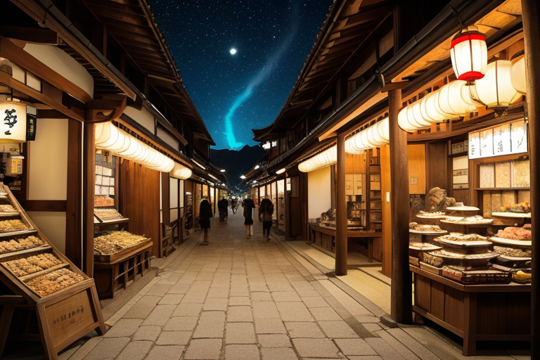
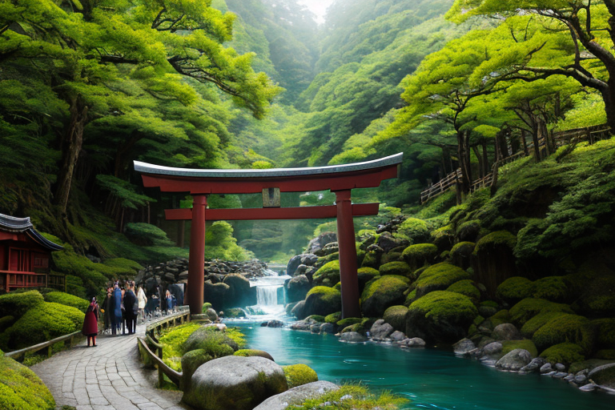

第一章 現実の三重
あなたはまだ気づいていない。この土地にも、王がいることを。
伊勢神宮の神域を離れ、近くの門前町へ足を踏み入れると、空気は一変する。石畳の参道沿いには老舗が軒を連ね、赤福の甘い香りが潮風に混じり、伊勢うどんの出汁の匂いが漂う。観光客と地元の人々が行き交い、土産物屋の店先では真珠の輝きが陽を受ける。活気に満ちたこの空間は、祈りの場であると同時に、確かな商いの場でもあった。
その喧噪のただ中、白と金の紋章を纏った一人の王が、人知れず佇んでいる。ミエリア・サンクトゥム。彼は無表情で人の流れを見つめ、その欲望や喜び、疲れや期待から生じる「歪み」を感じ取っていた。巡礼者の足音、商いの駆け引き、舌鼓の音。すべてがこの土地の感情の密度を高め、時に微かな軋みを生む。
彼は問う。この膨大な数の祈りは、果たして誰のためか。神への敬虔な思いか、それとも自身の欲望や安寧のための願いか。答えは出ない。王の役目は、問うことではなく、その祈りが織りなす感情の奔流が、地殻の静かな歪みを刺激しないよう、微調整を続けることだ。
第二章 歪みの兆候
志摩の真珠養殖場で、異変は静かに始まった。例年より水温がわずかに低く、アコヤガイの成長が鈍い。漁師たちの間に、目に見えない焦燥が広がる。それは経済の歪みだった。
熊野古道、伊勢路。巡礼者の数は増えているが、その足取りには以前のような静謐さが薄れ、ある種の「消費」としての巡礼が目立つ。スマートフォンを片手に急ぐ若者たち。彼らの祈りは、かつての苦行の末の願いとは質を異にしていた。
松阪牛を扱う市場では、高値がつくブランドに群がる欲望が、土地への負荷を密かに増幅させていた。伊勢うどんの店先の長い列は、期待と疲労の混ざった感情を撒き散らす。
ミエリアは、こうした人の流れと金の流れが生む微細な「熱」を感知する。それは地中の静かな歪みと共鳴しようとしていた。彼は無表情で、鳥居の紋章を浮かべた手をかざす。経済活動の活気そのものを否定はしない。ただ、その熱が一点に集中しすぎないよう、志摩の海風をほんの少し熊野路へ、市場の喧騒を少しばかり古道の静寂へと、目に見えない流れとして分散させていく。
祈りは、誰のためか。その答えより先に、祈りという名の感情の奔流が、この土地そのものを傷つけ始めていた。

第三章 王の葛藤
伊勢神宮の内宮前、五十鈴川のせせらぎは、絶え間ない拍手の音に掻き消されそうだった。参拝客の熱気は物理的な熱となって石畳を温め、その下の地脈に微かな乱れを生じさせていた。ミエリアは、白と金の光を纏った姿で、人々の頭上を見つめる。彼らの願い——商売繁盛、家内安全、合格祈願——は純粋な祈りというより、切実な欲望の奔流だった。その一点集中が、土地の「歪み」を増幅させる。
サンクティアが厳粛に報告する。「神域への集中が、周辺の歪み調整を阻害します」。イセリアは熊野古道の静寂が薄れていくことを憂えていた。王は知っている。この熱気そのものが、この地の礎であり、歪みの源でもあると。
彼は手を伸ばした。鳥居の紋章が微かに輝く。参拝客の一部の熱意を、ほんの少しだけ、隣接する赤目四十八滝の清涼な空気へ、志摩の海の広がりへと、目に見えない巡礼路に沿って分散させていく。全てを冷ますことはできない。均衡を保つだけだ。
祈りは、誰のためか。守るべきは神域か、それとも祈る人々か。感情を持たないはずの王の胸に、初めて、答えの出ない重さがのしかかった。
第四章 妖精との対話
伊勢神宮の森の奥、人の気配のない場所で、王は妖精たちと向き合っていた。サンクティアの目は、内宮の玉砂利を踏む無数の足音を映している。「彼らの祈りの多くは、交換です」と彼女は言った。無感情に、事実を述べるように。「家内安全、商売繁盛、合格祈願。願い事と引き換えに、賽銭を捧げ、お守りを買い、赤福を食べる。それがこの地の巡礼の、一つの形です」
イセリアが頷く。「神域は、その欲望の流れそのものに守られてきました。お蔭参りの賑わいが路銀を生み、それが遷宮を支え、森を保全する。松阪牛も真珠も、巡礼者の欲望が育てた商いです」
「歪みは」と王が問う。
「歪みは、その欲望の偏りに生じます」サンクティアが答える。「全ての熱意が一点に集中すれば、神域は重圧に潰れ、他の地は寂れる。私たちは、その流れを微かに分散させ、滞りを解くだけです」
祈りは、誰のためか。神のためか、人のためか。王は思う。祈りそのものが、既に神と人を繋ぐ「商い」なのだと。等価交換ではない、目に見えない何かの循環。彼が調整しているのは、その循環の均衡に他ならない。
第五章 微調整と余韻
熊野古道、伊勢路の石畳に、朝露が光る。今日も多くの巡礼者が、神域を目指して歩き始める。王は森の木々の間に立って、その流れを見つめる。歪みは微かだ。ある集団の熱意が一点に集中しすぎ、道中の小さな祠が忘れられようとしている。彼は指をわずかに動かす。一本の木の枝が折れ、道案内の古い道標が、偶然にも巡礼者の目に留まるように。
鳥羽の市場では、真珠を求める客の流れが、ある店に偏りすぎていた。王はほんの少し、海からの風向きを変える。ほのかな潮の香りが、隣の老舗を訪れるきっかけとなる。赤福を買う長い列の脇で、子供が転びそうになる。その一瞬前に、母親の手が自然と伸びる。誰も気づかない微調整の連続。
祈りは、誰のためか。王は今、理解しつつある。祈りは、祈る者のためでも、祈られる者のためでもない。祈りという行為そのものが、目に見えない何かを循環させ、地を潤す。彼の仕事は、その循環が滞らず、偏らず、静かに流れ続けるよう、ほんの少し手を添えることだ。
夕暮れ、伊勢神宮の森に金色の光が差す。今日も、歪みは大きくならなかった。見えない均衡のなかで、祈りは続いていく。
あなたの町にも、王がいる。